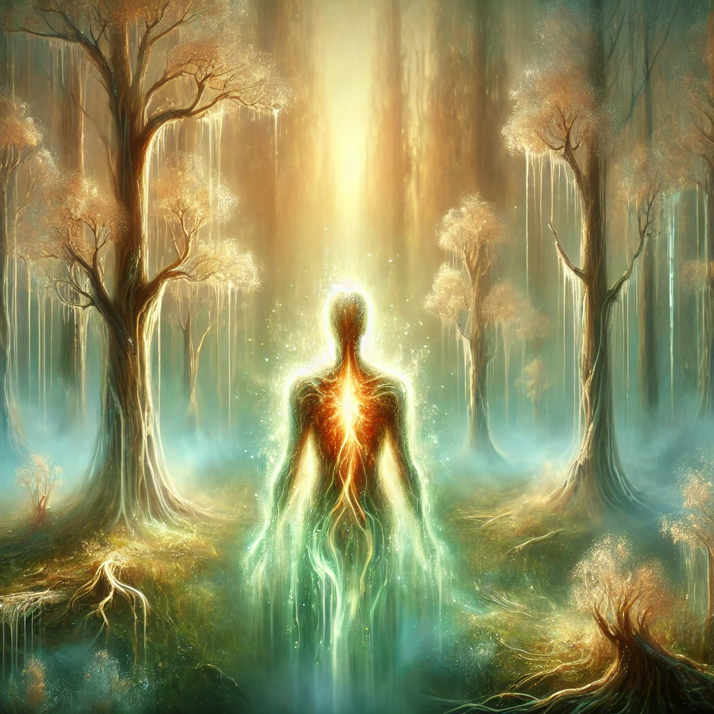

The compass glows, leading you into a mist-shrouded forest where reality begins to melt. Trees morph into pulsating, breathing entities. You encounter a glowing alien being with shimmering skin of liquid light.
“You stand at the threshold. Choose your tool for the journey,” it says.

What do you choose?